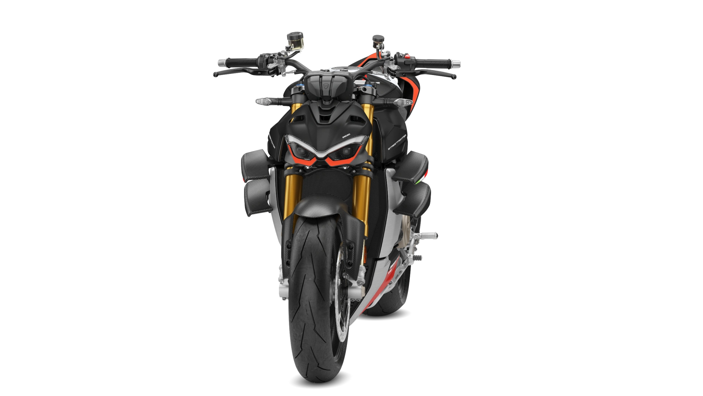
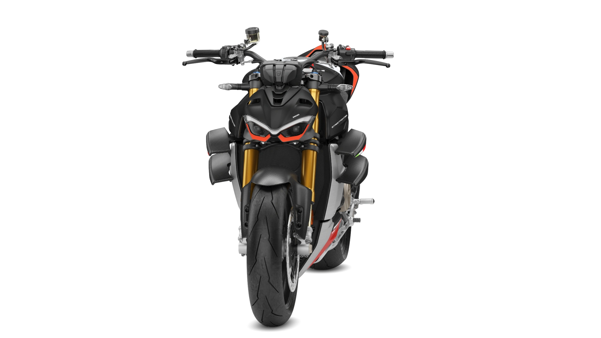
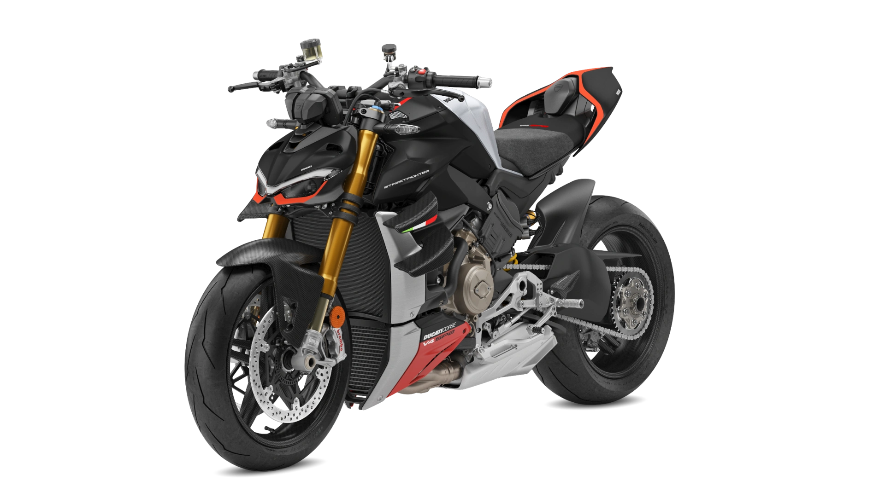
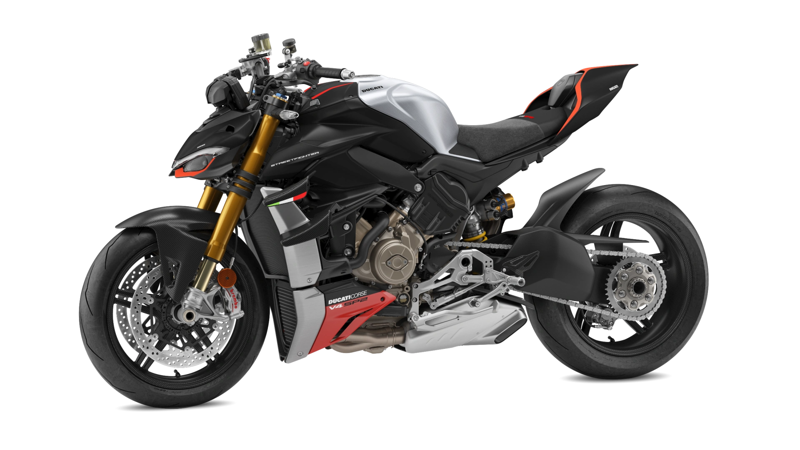
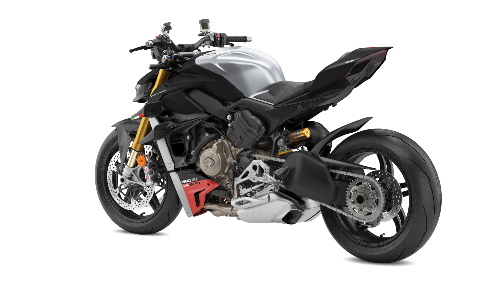
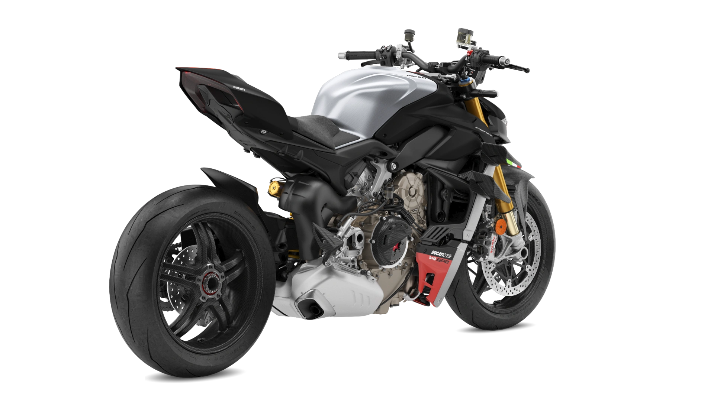
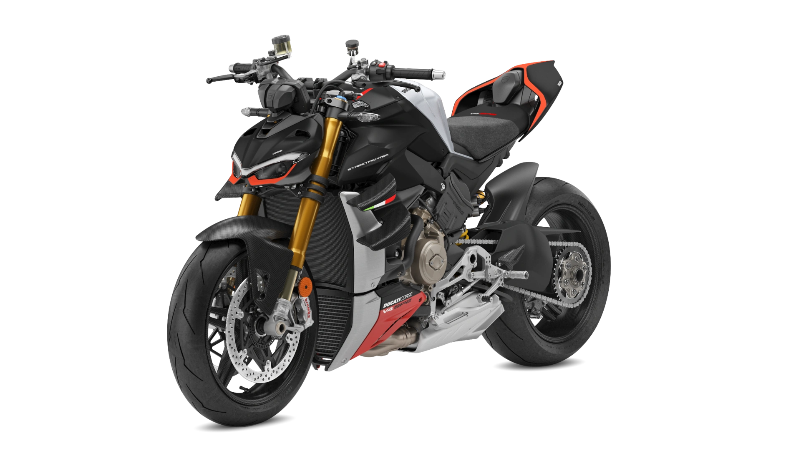
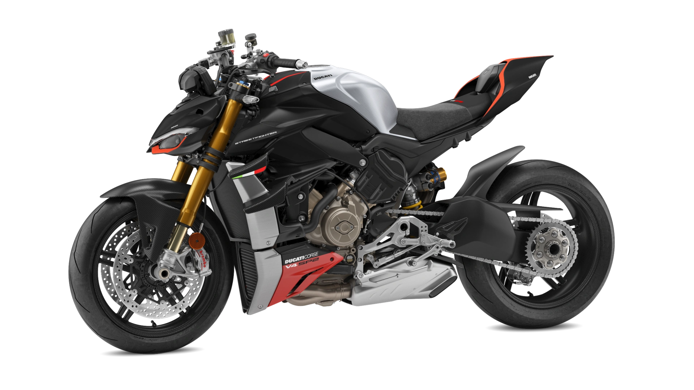
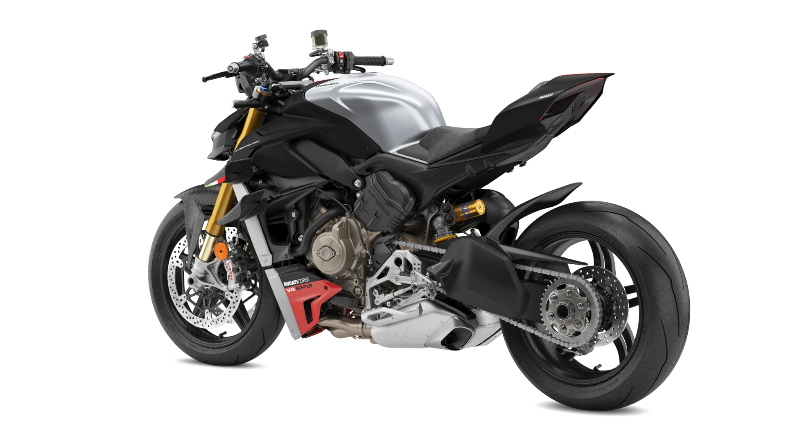
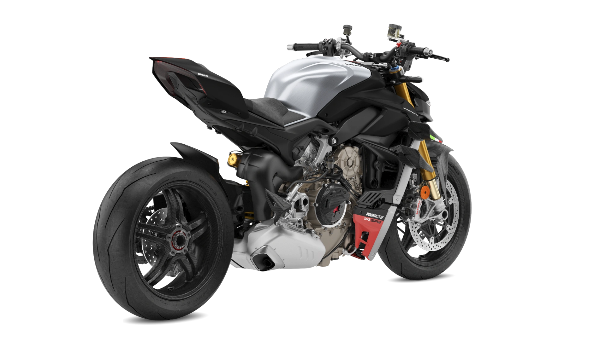

STREETFIGHTER V4S SP2
25.990€
Divertida. Ligera. Emocionante.
La Streetfighter V4 es la evolución natural de la familia que lleva aún más lejos los conceptos de la "Fight Formula". Sus elementos clave son la Panigale V4 despojada de los carenados, manillar alto y ancho, 178 kg de peso, motor Desmosedici Stradale de 208 CV, alas biplano y paquete electrónico de última generación. Una evolución que sigue a la de la familia Panigale V4.
Desmosedici Stradale
La Streetfighter V4 está equipada con el motor Desmosedici Stradale de 1.103 cc. En esta configuración Euro 5, el V4 de 90° genera 208 CV (153 kW) a 13.000 rpm. Un alto nivel de potencia para una naked, inigualable en el segmento, y acorde con la imagen alocada y exagerada propia de la Ducati Streetfighter V4. El valor de par máximo de 123 Nm (12,5 kgm) a 9.500 rpm prácticamente no cambia en comparación con la Panigale V4.
Diseño
Su estética agresiva y minimalista presenta un frente inspirado en el Joker de los cómics, la Streetfighter V4 entró de inmediato en los corazones de los entusiastas.
Mueve el raton para ver en 360
 

 








Ficha técnica
| MOTOR | Desmosedici Stradale 90° V4, cigüeñal giratorio hacia atrás, 4 válvulas de accionamiento desmodrómico por cilindro, refrigeración líquida |
| CILINDRADA | 1,103 cc |
| DIÁMETRO X CARRERA | 81 x 53.5 mm |
| RATIO DE COMPRESIÓN | 14.0:1 |
| POTENCIA | 153 kW (208 hp) @ 13,000 rpm |
| PAR MOTOR | 123 Nm (90.4 lb-ft) @ 9,500 rpm |
| INYECCIÓN | Sistema de inyección electrónica de combustible. Dos inyectores por cilindro. Cuerpos de mariposa elípticos de conducción completa. |
| ESCAPE | Sistema 4-2-1-2, con 2 catalizadores y 4 sondas lambda |
| CAJA DE CAMBIOS | 6 velocidades con Ducati Quick Shift (DQS) arriba/abajo EVO 2 |
| TRANSMISIÓN PRIMARIA | Engranajes de corte recto; Relación 1,80:1 |
| RELACIÓN DE TRANSMISIÓN | 1=38/14 2=36/17 3=33/19 4=32/21 5=30/22 6=30/24 |
| TRANSMISIÓN SECUNDARIA | Cadena; Piñón delantero 15; Piñón trasero 42 |
| EMBRAGUE | Embrague multidisco en húmedo con control hidráulico. Cilindro principal autopurgante |
| CHASIS | Aleación de aluminio "Marco delantero" |
| SUSPENSIÓN DELANTERA | Horquilla Öhlins NIX30 de 43 mm totalmente ajustable con tratamiento TiN. Ajuste electrónico de la compresión y el rebote con el modo basado en eventos Öhlins Smart EC 2.0 |
| RUEDA DELANTERA | Aleación de aluminio forjado de 3 radios 3,50" x 17" |
| NEUMÁTICO DELANTERO | Pirelli Diablo Rosso IV Corsa 120/70 ZR17 |
| SUSPENSIÓN TRASERA | Unidad Ohlins TTX36 totalmente ajustable. Ajuste electrónico de la compresión y el rebote con el modo basado en eventos Öhlins Smart EC 2.0. Basculante de aluminio de un solo lado |
| RUEDA TRASERA | Aleación de aluminio forjado de 3 radios 6,00" x 17" |
| NEUMÁTICO TRASERO | Pirelli Diablo Rosso IV Corsa 200/60 ZR17 |
| RECORRIDO DE SUSPENSIÓN | 120 mm (4.7 in) - 130 mm (5.1 in) |
| FRENO DELANTERO | 2 discos semiflotantes de 330 mm, pinzas Brembo Monobloc Stylema® (M4.30) de 4 pistones con Cornering ABS EVO. Cilindro principal autopurgante. |
| FRENO TRASERO | Disco de 245 mm, pinza de 2 pistones con Cornering ABS EVO |
| INSTRUMENTACIÓN | Unidad digital de última generación con pantalla TFT en color de 5". |
| PESO EN SECO | 178 kg (392 lb) |
| PESO Kerb | 197,5 kg (434 lb) |
| ALTURA ASIENTO | 845 mm (33.3 in) |
| DISTANCIA ENTRE EJES | 1.488 mm (58.6 in) |